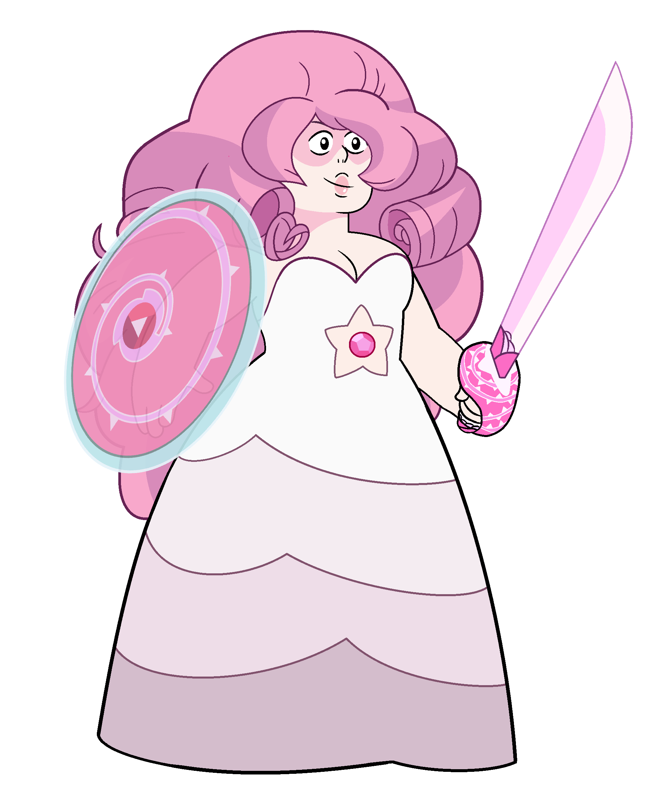
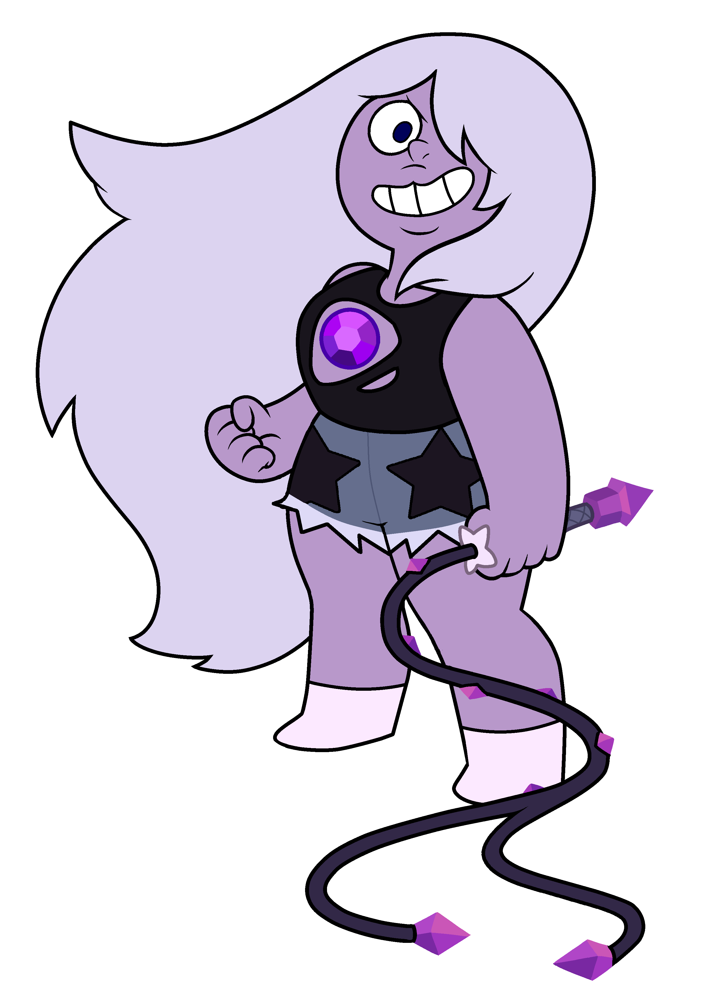
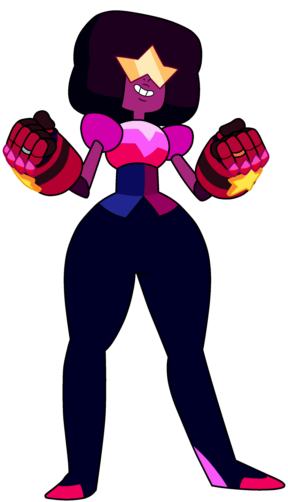
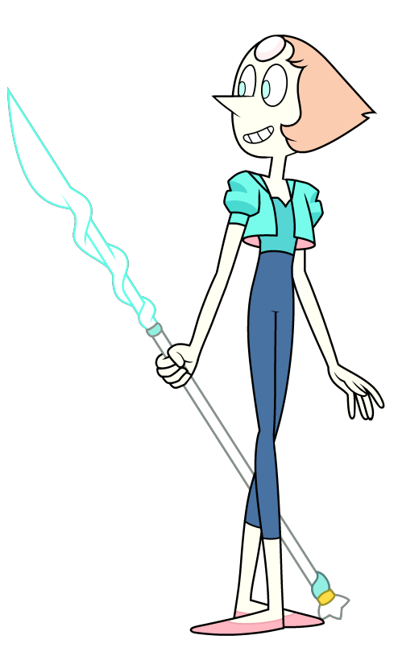

Rose Quartz, or Rose for short, was the founder and former leader of the Crystal Gems. Enthralled by the beauty of Earth, she led her friends and allies in a rebellion against the Gem Homeworld around 5,500 years before the events of the series successfully driving invading Gems off the planet and saving the life forms inhabiting it.

Amethyst (specifically Amethyst Facet-5 Cut-8XM) is a member of the Crystal Gems. She is the last known Gem manufactured on Earth as a part of the Gem Homeworld's Kindergarten project, being one of the last surviving Gems on Earth. After being found by Rose Quartz and the other Crystal Gems, Amethyst helped her friends protect the Earth for years.

Garnet is the voluntarily permanent fusion of Ruby and Sapphire and the current de facto leader of the Crystal Gems. Garnet is one of the last surviving Gems on Earth who joined the Crystal Gems in the rebellion against the Gem Homeworld and afterward assisted her friends in protecting the Earth over the next few millennia.

Pearl is a member of the Crystal Gems. One of Rose Quartz's closest followers and her sole confidant, Pearl is one of the last surviving Gems on Earth who joined the Crystal Gems in their rebellion against the Gem Homeworld.